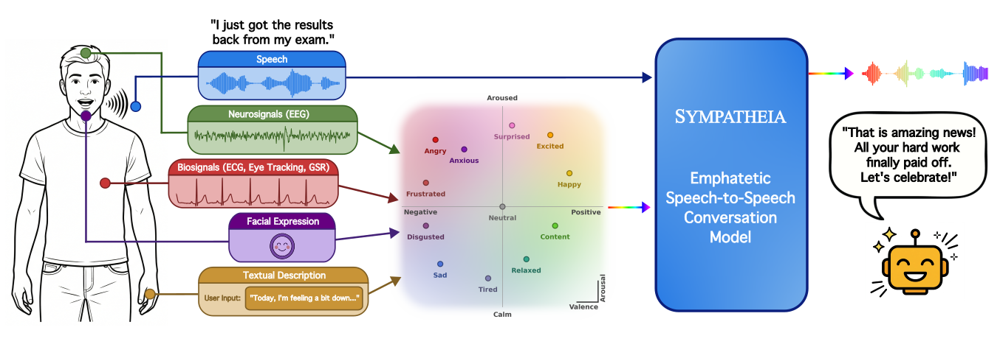

Sympatheia is an empathetic dialogue assistant that generates speech responses conditioned on continuous emotion coordinates in valence-arousal space. Trained on the Sympatheia-18K dataset across 12 emotion categories, it outperforms GLM-4-Voice base, Qwen3-Omni, and OpenS2S on both neutral and emotional query evaluations.
Emotion-aware speech generation with continuous valence-arousal conditioning across 12 emotion categories.

The user speaks a neutral question. All models receive the target emotion information via their system prompts. The difference lies in how each model utilizes this context.
The user's voice itself carries emotion. None of the models receive emotion information in their system prompt — the audio is the only signal.
Unlike discrete emotion classifiers, Sympatheia operates in continuous VA space — enabling smooth blending between any two emotional states.
Sympatheia-18K is a synthesized dataset of emotion-controlled speech-to-speech dialogue pairs. Each sample is conditioned on one of 12 target emotions defined by continuous (valence, arousal) coordinates. The dataset includes two splits. Emotional Split (12k): Emotion-matched query-response pairs; Neutral Split (6k): Neutral queries paired with all 12 emotional response variants.
LLM-based empathy evaluation (1–5 scale) by Qwen3-Omni as judge. Higher is better. Bold = best per row. Neutral: Sympatheia uses VA-conditioned prompts. Emotional: no emotion in system prompt for any model.
| Emotion | Base | Qwen3 | OpenS2S | Sym v1 | Sym v2 |
|---|---|---|---|---|---|
| Overall | 2.01 | 2.38 | 2.40 | 4.58 | 4.43 |
| Emotion | Base | Qwen3 | OpenS2S | Sym v1 | Sym v2 |
|---|---|---|---|---|---|
| Overall | 3.93 | 4.69 | 4.23 | 4.54 | 4.83 |